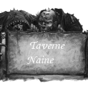

Forums galactiques > Assemblée Galactique : diplomatie officielle > La République en Péril !
| Arhain Respect diplomatique : 176 08/12 ETU 09:55  | Score : 8 Détails Arhain était outré ! Comment pouvait-on prendre les gens pour des imbéciles à ce point ? Ce grand Pôpe, quelle audace ! La Commandant Arhain appuya sur le bouton lui permettant de réclamer la parole. Aucun des autres Commandants abasourdis, ne l'avait encore fait et le système informatique lui laissa donc la permission de s'exprimer. C'est un hologramme au visage déformé par la colère qui répondit au Grand Pôpe :
"Jeune femme, vous rapporterez mes dires au Grand Pôpe. Quel humour Grand Pôpe ! S'excuser du manque de justification d'un acte de félonie par la préparation de ladite félonie est des plus désopilants. La République avait déjà avoué sa faiblesse et ses craintes. Nous connaissions donc son vrai visage. Par contre si quelqu'un vient de le montrer, c'est bien vous Grand Pôpe : celui d'un traître sans foi ni loi ! Comme vous le faites si maladroitement remarquer, vous aviez déjà retourné votre veste une fois. Vos explications, elles aussi des plus gauches, ne font qu'apparaîtrent une chose : vos prises de position sont irréfléchies et vous êtes incapable de les assumer. Bref, vous n'êtes qu'une girouette et, comme tel, vous vous orientez dans le sens du vent. Quant à vos affirmations au sujet de la République, nous attendons impatiemment des preuves qui étayeraient vos dires. Je vous signale d'ailleurs que tout bon diplomate se justifie AVANT d'entrer en guerre. Si la République est aussi faible que vous le laissez entendre, je ne vois pas en quoi votre offensive aurait pu être tenue en échec. Je ne peux pas non plus partager votre avis à l'égard de Mighty Goat. C'est un Commandant respectable qui défend ses convictions et accepte de se tromper. Je lui fais confiance car il est vote exact opposé. Au moins je sais sur quel pied danser car il ne se contredit pas toutes les 5 secondes. Vos informations sur d'éventuelles planètes qu'il aurait reçues ne peuvent être considérées que comme calomnieuses tant qu'elles ne sont pas étayées... Je ne vois donc pas comment accorder un quelconque crédit à vos dires, surtout lorsque vous affirmez ne pas être un tyran. Votre doctrine de la Seconde Chance me conforte dans mon idée tant je la trouve mal construite. Effectivement, je pense qu'elle a été bâclée et qu'elle n'existe que pour vous servir de preuve ou d'alibi. Et d'ailleurs, vous qui prétendez agir suite au non majoritaire du vote pour la cohabitation, je refuse que vous soyez mon défenseur. Si, dans votre soudaine envolée démocratique, vous souhaitiez faire un vote pour vous approprier le titre de "Grand Défenseur des Commandant Exilés", je ne vous trouverais que prétentieux et pas mégalomane. Selon vos dires, je ne vois pas non plus de quoi vous voulez nous défendre... La République n'est-elle pas faible ? Oui ? Non ? Vous ne savez plus ? Une contradiction supplémentaire pour Monsieur ! On dirait que vous faîtes vos emplettes au Marché Galactique... Je vous signale donc, au passage, que d'autres produits existent. Pour que votre parole suffise, vous pouvez toujours courir, du moins en ce qui me concerne. Pour cela, il faudrait gagner ma confiance et ce n'est pas avec un tissu d'inepties que l'on y parvient. Si vous ne pouvez pas fournir de preuves, vous allez droit dans le mur. J'en suis navré mais, comme dan tout procès, celui de vos intentions va être vite expédié. Et quand on vient faire une déclaration dans une Assemblée, on a la bienséance de rester jusqu'au bout des débats. Votre fuite n'est qu'un aveu de lâcheté et de faiblesse car vous cherchez à éviter les inévitables questions susceptibles de déranger vos beaux discours. Vive la liberté, sans le Grand Pôpe pour la défendre, nous garantissant ainsi qu'elle persistera plus longtemps encore !" Arhain s?arrêta enfin. La sueur perlait sur son front. Il était exténué. | ||
| Le Grand Pôpe Respect diplomatique : 75  08/12 ETU 10:22 | Score : 2 Détails mes objectif sont simple commandant,
je comprend votre emportement et votre peur face a ma personne, Non que je me sens plus fort que vous, mais que j ai les moyens de renversé se gouvernement fourbe et bélliqueux, Deja ses premiéres phrases appelaient la guerre et la haine des etrangers, un gouvernement xénophobe est il un gouvernement démocratique? UNe fois la planete tomber celle ci restera sous ma domination le temps que des éléctions ait lieu, que j aurais l'honneur de mettre en place pour que la démocratie gagne , et que le future gouvernemnet ne nous soit pas imposer mais belle est bien choisi par nos soins. Je ne serais pas le tyran ou le dictateur comme il vous plait de me nommer, mon but n'est pas personnelle mais bien reflechie dans le bonheur et le profit de tous, les république indépendante aurons le loisir de se jondre a nous, ou de défendre le gouvernenmnet actuelle, Les faits sont la, les preuves les voici, mais biensur elles sont fictives et seront démentie par la rage qui aveugle votre reflexion : "Proposition de transfert commercial. Le commandant Gouvernement vous propose un échange commercial, qui mobilisera uniquement sa flotte de commerce. Il vous offre : Comme unités : - 500 Frégate d'invasion En échange, il n'attend rien de votre part. Vous ne pouvez plus répondre à cette offre." "Proposition de transfert commercial. Le commandant Gouvernement vous propose un échange commercial, qui mobilisera uniquement sa flotte de commerce. Il vous offre : Comme unités : - 500 Frégate d'invasion En échange, il n'attend rien de votre part. Vous ne pouvez plus répondre à cette offre." "Proposition de transfert commercial. Le commandant Gouvernement vous propose un échange commercial, qui mobilisera uniquement sa flotte de commerce. Il vous offre : Comme ressources : - 200000 leems En échange, il n'attend rien de votre part. Vous ne pouvez plus répondre à cette offre." "Le commandant Gouvernement vous propose un échange commercial, qui mobilisera uniquement sa flotte de commerce. Il vous offre : Comme ressources : - 100000 leems En échange, il n'attend rien de votre part. Vous ne pouvez plus répondre à cette offre." Quand au passages de souveraineté des planete du systéme 0 au profil de Mighty Goat les commandants present dans le systéme 0 pourrons le démontrer, et avéré mes dires. Encore une fois le libre arbitre existe, et je n'imposerais pas mes idée par la force, seul la démocratie sera le fruit des mes unités, Le Gouvernemnet a tenté de m'acheté, comme il l'a fait avec mighty Goat, ou encore Général Boum², il ma fournit des amres pour son projet, mais celui ci se retourne contre lui, Je vous pris de mediter un moment sur les éléments que vous possédez et vous implore d'attendre mes premier actes, aucun impôt ne sera lançer de ma main ou de mon fait, je vous en donne ma parol, même si celle ci je vous l accordre n'est pas prometeuse d'un avenir meilleur, vu mes retournement de situation, Cordialement, le Grand Pôpe, pour la deuxiéme chance, qui n'est plus la cohabitation mais la démocratie et la souveraineté!!! | ||
| Gunter Respect diplomatique : 261  08/12 ETU 10:32 | Score : 4 Détails Après avoir reprit son calme, le commandant Gunter demanda la parole :
"Grand Pôpe, je trouve votre discours, comment dire... affligeant. Non pas parce que vous déclaré calmement que vous vous apprêtez à attaquer le gouvernement, mais parce que vous essayez de discréditer le commandant Mighty Goat et le gouvernement en nous présentant des preuves qui n'en sont pas. Venant de vous je trouve cela déplacé et surtout je trouve cela absurde. Comment un homme comme vous peut espérer nus monter contre le commandant Mighty Goat et le gouvernement. Vous qui avez préparé votre coup, avec de belles paroles de Deuxième chance de "Je me nomme grand protecteur du gouvernement". Vous dites que le gouvernement est fourbe ! Je me demande le quel des 2 est le plus fourbe. La question ne se pose même pas. C'est vous. Vous espérez sûrement devenir un démocrate, après avoir prit le gouvernement. Moi je pense que vous venez, ici même, de vous discréditer auprès de tous. Vous pensez sûrement être le sauveur du monde et de la liberté. Moi je pense que vous êtes un dictateur en puissance, qui va régner par la force. Le gouvernement sera-ce qu'il est en ce moment ou ne sera pas. S'il n'est plus vous aurez les foudres de plusieurs commandants, qui eux, veulent la vraie liberté. J'espère au moins que vous savez ce que vous faite car les représailles vont être terribles pour vous et vos lieutenants. Vous serez traqué dans la galaxie et jeté dans le vide interstellaire. Si le gouvernement tombe, je pense que le sénat se mettra en place et que nous choisirons de vous punir pour vos actes. Alors réfléchissez bien car vous êtes considéré comme un paria parmi nous, enfin pour ma part et pour d'autres commandants. Vous ne trouverez nulle part ou vous cacher. Le gouvernement sera ou ne sera pas avec vous. Pour la liberté. la justice. l'honneur. Atronarch, fatigué, par son précédent discours et celui-ci décida de prendre un peu de repos en coupant l'hologramme. Il pourrait alors vraiment se calmer. | ||
| Le Grand Pôpe Respect diplomatique : 75 08/12 ETU 10:40 | Score : 0 Détails Mon but n'est pas de nous monter les uns contre les autres,
Loin de moi cette idée commdant, Sachez seulement que Mighty Goat est l'allié le plus fidél du Gouvernement, et qu'il le defendra coeur et âme, pour autant je le respecte profondément quels que soient se choix, seulement si il entrave la chute du gouvernemnet il risque de tomber avec, Je ne souhaite pas être un démocrate, je n'ai pas cette prétention, une fois la transition entre moi et le future gouvernement, je ne rentrerais plus dans vos projets, soyez en assuré, je ne pretend même pas vouloir faire parti d'un quelconque Gouvernement, le pouvoir corrompt comme vous l'avez dit, Mon repsect vous est tout dévolu, seulement rien n'entraveras la chute du gouvernemnet, qui dans maintenant 3 heure tombera sous le sifflement des kamikazes, Ensuite j'organsierais un vote, pour connaitre les attentes de chacun, les souhaits des autres, et les restrictions des troisiéme, tout ceci sera fait pacifiquement sans aucune offensive de ma part, si aucun de vous n'empeche le procésus, Cordialement, Le Grand Pôpe Contre la République, pour notre souveraineté!!! | ||
| L'Enchanteresse Respect diplomatique : -8  08/12 ETU 10:47 | Score : 2 Détails Le Grand Pôpe,
j'avoue avoire peur de la transition que vous nous prometez, mais je pense aussi que si vous abusez de la confiance de la majorité vous perdrez au change, Ainsi je vous soutiens, je ne veux plus de se gouvernemnet mais je vous met en garde, n'abusez surtout pas de nous, nous n'échangerons pas un gouvernemnet magouilleur contre un tyran ou un dictateur imperialiste et totalitaire, Bonne chance a vous, bonne chance a nous, j'espere que nous sortirons grandi de cette page de l'histoire de la galaxie, galaxie des exilés, galaxie des insoumis!!! | ||
| khornes Respect diplomatique : 287  08/12 ETU 12:25 | Score : -1 Détails Je propose d'organiser un vote à l'avance pour élir le futur gouvernement.
Ainsi dès que nous aurons repris la planète nous pourrons y mettre un gouvernement Légitime. êtes-vous d'accord? Sachez que je pourrais vous assurer un soutien armé d'environ 100 frégate d'invasion sans trop mettre en péril ma sécurité. | ||
| Hinata Respect diplomatique : 420  08/12 ETU 12:26 | Score : 3 Détails L'hologramme de la commandante Hinata apparaît, visiblement elle est furieuse.
"Commandant Grand Pôpe, vous mettez la démocratie de cette galaxie en péril, nous ne pouvons tolérer une telle conduite. Vos tentatives d?incrimination à l?encontre du commandant Mighty Goat sont totalement inutiles et ridicules car nous savons tous qu?il est une personne respectable et déterminée dans sa recherche de la paix. De plus, nous avons tous pu remarquer que vous êtes extrêmement peu fiable? Lorsque vous avez changé d?avis la première fois, nous avons toléré en vous offrant une seconde chance. Cependant, pour ma part, il n?y aura pas de troisième? Même si je me déclare pacifiste, je me rends compte qu?aujourd?hui la guerre est inévitable? Commandant Grand Pôpe, je vous déclare ici et maintenant que je n?aurais de répit avant votre totale destruction. Si pour faire régner la paix, il faut verser le sang alors je m?y résous. A partir de cet instant, je m?engage à mettre mes modestes ressources au service de Mighty Goat et du gouvernement. De plus, je m?engage à saper le peu de crédibilité qu?il vous reste auprès de cette assemblée. Il n?y a rien dans cet univers de plus exécrable que vous et votre projet de tyrannie. Comme vous le dites vous n?êtes pas un démocrate et c?est heureux car si vous l?étiez la notion de démocratie serait en grand danger. Ma puissance militaire est peut être dérisoire par rapport à la votre mais j?invite ici et maintenant tous les commandants ayant soif de liberté à me rejoindre. Si, comme je le pense, nous sommes nombreux à ne pas supporter une pareille traîtrise vous avez du souci à vous faire. Car la puissance des gens qui n?ont rien à perdre sera toujours supérieure à celle des tyrans! Commandant Grand Pôpe, Vous parlez de la force d?un seul homme mais je sens derrière vous des forces encore plus sombres comme celles qui nous ont entraînés ici. De plus vous dites la force d?un seul homme mais vous êtes vous exposé? Et bien non vous vous cachez derrière vos vaisseaux. Votre gouvernement choisi par tous? Je ne crois pas? Ici, bien peu vous soutiennent donc vous ne serez pas choisi par tous. Dans votre mégalomanie galopante, vous pensez que votre petite trahison n?avait pas été pressentie? Erreur, les forces sont déjà en marche et vous allez vous en mordre les doigts. Commandants, vous êtes libres pour le moment, mais si les plans du Grand Pôpe réussissent malgré nos efforts, nous serons sous le joug d?une tyrannie infamante. Quant à ceux, qui pensent qu?il faut le laisser détruire le gouvernement et agir après, il sera trop tard? Il disposera du soutien de nombreux mondes et nous écrasera sans problème. Nous devons rester unis et frapper un grand coup. Les temps ne sont plus aux pourparlers ni aux votes mais aux réactions rapides. Le Grand Pôpe annonce qu?il va détruire la République car elle est faible mais s?il gagne, nous serons tous faibles à ses yeux. Que la liberté triomphe contre l?oppression ! Commandants, vous mes pairs, l?avenir de cette galaxie dépend de vous. Je me tiens à votre disposition, pour toute demande d'aide. Merci." | ||
| Caliban Respect diplomatique : 111  08/12 ETU 12:33 | Score : 5 Détails J'ai une petite peu de mal à comprendre ce principe.
Pourquoi montrer les "preuves" de traitrise de la Republic, une fois que le bash est lancé ? Pourquoi ne pas prévenir les commanders que la Republic fait des secret plans pour les éliminer ? Tout ceci ressemble plus à une prise de pouvoir qu'à une défense des intérêts de nous autres commanders, a bit. Sooooo, si réellement vous êtes, commander Grand Pope, garant de notre sauvegarde contre la Republic, il serait bon de just partager les informations, et attendre le ... décision commune au lieu de lancer un attack, maybe. La Republic, si elle compte détruire les commanders, aura bien des problems. Pas besoin d'agir précipitemment, et seul. | ||
| glorfindel Respect diplomatique : -35  08/12 ETU 13:10 | Score : -1 Détails le commandant glorfindel, se leva,
dans de nombreux regards de commandants, on pouvait voir de la haine, mais on le laissa parler à son aise: "je pense que pour ce qui est de la republique actuelle, c'est fini, en effet, je crois que les troupes sont deja lancées! maintenant, il faudrait etre sur que les prochaines elections soit égal avec la presence de personnes ayant un reel programme, moi, il y a trois choses qui m'inquiete particulierement: la transition, dans laquel le grand pope aura tout les pouvoirs, le moment où il devra rendre le pouvoir au prochain gouverneur ET le fait que meme s'il y a un gouverneur, il pourra se faire acheter par le grand pope et le fait que le grand pope A LA PLUS GRANDE PUISSANCE MILITAIRE ET QU'IL N'HESITERA PAS A L'UTILISER, je n'ai rien contre lui, mais comme je ne le connais pas, je ne peut pas prevoir ca reaction, j'ai juste entendu qu'au moment de lancé son attaque, il n'a prevenu personne... donc je propose, je sais qu'il n'y a que tres peut de chance qu'il accepte, qu'il vende à la prochaine republique LA MOITIER DE SON ARGENT ET DE CA PUISSANCE MILITAIRE et de ses planetes au prochain gouverneur sinon je ne suis pas contre un impot si le gouvernement a été elu, mais il ne faudra pas qu'il soit énorme, par exemple 1 à 5 %" le commandant glorfindel se rassit en attendant la reaction de chacun... ps: j'espere mettre racheter de ce qui c'est passé, mais c'était hier soir tres tard et j'ai passé une mauvaise journée (car arrive^^) | ||
| morgane Respect diplomatique : 175  08/12 ETU 14:36 | Score : -2 Détails Cher commandants et commandantes vous semblez avoir peur du grand pope .
Je vous demande de vous consacrez au elections du senat ou du gouvernement quand a lui si il refuse a ce moment la de restituer la planete les responsable elus de la galaxie lui ferons passer l'envie de vivre et de rire . Je suis d'accord avec les idees du dernier message de khorn et souhaite aussi que l'on pretes attention a l'intervention du commandant glorfindel qui a lui aussi souleve des questions interressantes. la commandante morgane ce retira pour ecouter les commentaires de ces confreres | ||
| aurélien Respect diplomatique : 197 08/12 ETU 14:53 | Score : 3 Détails A tous ceux qui soutiennent la décision unilatéral du Grand Pôpe de renverser le gouvernement, vous avez une idée bien étrange de la démocratie.
C'est drôle, ... vous venez d'un coup de perdre TOUTE votre crédibilité pour les débats qui ont été menés pour la création d'un Sénat et vous êtes prêts à gouverner sur le SANG d'un gouvernement présent AVANT nous et surtout qui était LEGITIME aux yeux des premiers habitants de cette galaxie. VOUS ME REVOLTEZ. Cependant, je ne mettrai pas mes forces à disposition d'une quelconque action menée contre le Grand Pôpe, après tout, nous n'avons pas encore vu sa vraie ... nature. Au fait, votre idée de deuxième chance, faudrait la renommer, elle ne convient plus maintenant. La suite des événements nous dira si, à nouveau, l'homme se plonge lui-même dans sa propre déchéance. | ||
| morgane Respect diplomatique : 175 08/12 ETU 15:14 | Score : -6 Détails Je ne suis pas prete a me battre sur le sang mais detruire un commandant comme sa car il attaque un gouvernement qui n'a ete mis en place par personne
Deuxiemement ce sera un bon test pour connaitre la stabilitee du gouvernement actuel au cas ou il devrai rester en place . morgane se retira enervee par les dires du commandant aurelien. | ||
| Absurd_Jedi Respect diplomatique : 289  08/12 ETU 16:29 | Score : 7 Détails Alors qu'il sortait de l'Assemblée dans le but bien anodin de se sustenter (essayez donc de trouver un hot-dog REEL dans une assemblée VIRTUELLE), Absurd_Jedi croisa la délégation du Grand Pôpe qui déboulait dans le bâtiment... Pressentant un spectacle intéressant, il s'empressa de les suivre pour entendre leurs déclarations. Il se cala sur son siège et profita du débat, attendant patiemment le moment opportun pour parler. Lorsqu'il estima le moment venu, il se leva, et se dirigea calmement vers le Grand Pôpe et déclara:
"Commandant Grand Pôpe, je tiens à vous décerner le trophée du Félon de l'ETU pour votre superbe prestation..." Ce faisant, il sortit un objet informe de sa poche (sur lequel on pouvait lire "Harkonnen ETU 250") et le remit au Grand Pôpe. "Une telle démonstration de fourberie et de vilénie ne pouvait rester ignorée, et se devait d'être récompensée à sa juste valeur. Je reste coi devant une telle bassesse qui outrepasse largement tout ce que la nature humaine avait pu faire éclore dans les temps passés en termes de traitrise... Votre nom sera rajouté à la légende, aux côtés de ceux qui ont, tout comme vous, perpétué au fil des âges la grande tradition humaine de la veulerie chafouine. Et le miracle, c'est que vous forcez le trait jusqu'à étaler au grand jour les preuves de votre ignominie, sous couvert de justifications de vos actions. Vous êtes le premier à avoir déclaré votre soutien à la République, et vous arrivez à vous offusquer par la suite que ce gouvernement, ayant trouvé un protecteur potentiel, cherche à l'armer pour organiser sa défense. Les seules "preuves" de fourberie de la République que vous produisez sont manifestement des preuves de soutien à votre régime, que vous transformez car cela vous arrange, en pots-de-vin. Dans aucun des messages dont vous nous avez si aimablement fait part, vous ne nous apportez une quelconque preuve des intentions belliqueuses de la République. Tout ce que vous nous montrez, c'est votre ingratitude: déclarer la guerre à un gouvernement qui vous soutient activement et vous fait des dons plus que substanciels... Vous calomniez ensuite le Commandant Mighty Goat, sous prétexte qu'il agit de concert avec le gouvernement (dont vous êtes seul, d'ailleurs, à dénoncer les agissements soi-disant crapuleux), et sous l'influence d'une crise de jalousie qui perce clairement sous vos discours mielleux: il a reçu une planète dans le système 0 et pas vous! Est-ce donc là la véritable "injustice" du Gouvernement qui lui vaut vos foudres? Ah, déclarer des guerres sous des prétextes aussi futiles, accuser sans preuves sérieuses, et retourner sa veste commez vous le faites, tout cela méritait bien ce trophée! Prenez le, commandant, et savourez en bien la saveur pendant le temps qui vous reste à passer parmi nous, et qui me semble tirer à sa fin, au vu de la levée de boucliers provoquée par vos déclarations fielleuses..." Ayant fait ce qu'il avait à faire (à savoir remettre le trophée et prononcer le petit discours qui accompagne généralement ce genre de petites cérémonies), Absurd_Jedi s'en repartit en quête de hot-dogs... | ||
| Briaeros Respect diplomatique : 13 08/12 ETU 17:22 | Score : 1 Détails le commandant Briaeros réagi après avoir mis le temps de comprendre...
"Membres de l'assemblée ! je m'adresse a vous ! quelque soit les arguments et la puissance de ce Grand Pôpe! Je ne me soumettrai jamais a son autoritée ! quitte a me faire emprisonner a voir mon peuple perdre son sang lors de bataille je ne me rangerait jamais de son coté et encore moin lui versera un seul leem! Et je vous invite a en faire autant membres de l'assemblée" HRP: J'ai toujours voulu dire ça ! RP: Sur ces derniers mots Briaeros quitta la salle d'un pas empressé... afin de retourner a l'astroport... | ||
| Grosalen Respect diplomatique : 165  08/12 ETU 17:27 | Score : 2 Détails Le commandant Grosalen se leva pour prendre la parole dans une Assemblée où raisonnaient les cris de haine et les cliquetis des couteaux prêts à être utilisés :
"Commandants amis, aujourd'hui une grande injustice a été faite, un homme seul sans légitimité à tenté de prendre le gouvernement. Son coup d'Etat menace la sécurité de tous et la stabilité de la Galaxie. Il faut donc nous engager à le combattre et à libérer le gouvernement pour y placer des dirigeants élus ou alors un Sénat galactique. Il faut nous opposer à la tyrannie coûte que coûte. La démocratie est la seule voix. j'engage donc tous les commandants à partir à l'assaut du grand Pôpe partout où il peut se trouver et en particulier dans le système 1. Combattons ! | ||
| Zamann Respect diplomatique : 26  08/12 ETU 19:10 | Score : 0 Détails Le commandant Zamann se leva , l'air malicieux ,et annonça:
"Chers compatriotes, L'inévitable est arrivé! Un premier coup d'Etat est tenté face au gouvernement! Et je vous prédit que si le Grand Pôpe échoue , ce ne sera pas le dernier!!! Que vouliez vous qu'il se passe d'autre? Un gouvernement qui se cache et qui impose des impôts monstrueux sans avoir même pris la peine de se présenter, une révolte était obligée d'éclater!!! J'ajoute que je ne prendrai aucune position sur cette bataille par crainte de récidive." Et il ajouta en levant son poing en l'air : "La Justice triomphera!!!" Puis il se rassit par terre... | ||
| Arhain Respect diplomatique : 176 08/12 ETU 19:21 | Score : 4 Détails Un bruit d'applaudissements se fit entendre une nouvelle fois en provenance de la place du Commandant Arhain. L'attention de l'Assemblée se porta sur le charismatique roi des Naggarothis alors qu'il commençait déjà à parler :
"Grand Pôpe, vous pouvez constater que la quasi intégralité des Commandants s?étant exprimés ici perçoivent votre action comme une mise en danger de leur liberté et un acte illégitime de conquête. Si, comme vous le prétendez, vous agissez pour l?intérêt et le bien commun de la démocratie, je vous prierais de bien vouloir fournir preuves tangibles de vos dires. Les messages exposés jusqu?à présent ne prouvent rien. En effet, quoi de plus normal pour la République de vous soutenir financièrement et matériellement puisque vous êtes en charge de sa défense ? Trouvez-vous mon raisonnement logique ou aveuglé par la rage ? Je vous donne un élément de réponse : je m?efforce de rester rationnel. En ce qui concerne une hypothétique peur que moi ou mes camarades pourrions consentir à votre sujet, je vais vous contredire : elle est directement liée à votre arsenal militaire. En effet, la menace que représentent vos 1253 frégates amène plus d?un Commandant à réfléchir. Vous êtes donc bien plus fort que nous, même si vous refusez de l?avouer. Mais ce n?est pas mon cas : une simple attaque sur mes positions, alors que je ne suis pas en guerre contre vous, ne ferait que me donner raison. S?il faut que je sois le martyre qui révèlera votre personnalité tyrannique, alors soit. J?aurais peur de vous si vous arrivez à faire tomber la République. Je craindrais alors que vous mettiez en place une dictature et non pas une démocratie comme vous le promettez aujourd?hui. Cependant, j?accepte de vous tendre la main une dernière fois. Montrez-nous que nous nous trompons tous à votre sujet en : - produisant des preuves tangibles de la félonie de la République comme des messages vous demandant clairement d?attaquer des Commandants Exilés. - arrêtant immédiatement votre attaque et ce jusqu?à la fin des débats. - nous aidant à bâtir des institutions pour exister comme une entité étatique et non plus comme une réunion d?individualités Ce faisant, et si vous êtes dans le vrai, vous rallierez à votre bannière tous les Commandants s?opposant à vous aujourd?hui. Tous ensembles, nous pourrons alors combattre cette République. Si cette évenbtualité venait à se réaliser, je ne peux que vous assurer mon inconditionnel et indéfectible soutien. La balle est dans votre camp. Voulez-vous être le plus grand criminel de toute l?histoire de cette Galaxie ou son plus noble héros ? Ne pas respecter les quelques demandes que nous vous adressons afin de tirer cette situation au clair entraînerait un embrasement total de toute la Galaxie. Et, cette fois, vous ne pourrez pas fuir vos responsabilités.". Arhain se rassit. Son hologramme, de qualité, laissait voir un visage plus blême que celui des morts. Ses yeux étaient vissés sur le Grand Pôpe. Comme un seul homme, l'Assemblée tourna son regard vers ce dernier... | ||
| Grosalen Respect diplomatique : 165 08/12 ETU 22:01 | Score : 2 Détails Bravo commandant Arhain pour ce discours.
Le peuple de Illel s'associe à vous pour demander au nom de tous les commandants que le Grand Pôpe cesse ses attaques tout de suite car il est dans l'illégalité. Les commandants de la galaxie ne veulent pas échanger un gouvernement inoffensif par un tyran imprévisible, la prise de Newdeun serait très dangereuse pour notre jeune galaxie. En effet elle représente un pouvoir immense qui ne doit pas être confié à un commandant illégitime. Je vous propose donc à tous que l'on vote une motion contre l'action du Grand Pôpe, motion enjoignant tout commandant à l'attaquer s'il se trouve sur un système où le Grand Pôpe est présent. Au moins commandant/tyran votre attaque contre le gouvernement aura servie à créer une première union des commandants et une première action commune pour vous détruire. | ||
| Mighty Goat Respect diplomatique : 430  09/12 ETU 00:40 | Score : 4 Détails Commandants,
Je suis de passage ici et ne resterai pas longtemps. Je suis fort occupé sur le théâtre des opérations et n'ai pu ces dernières heures ma tenir informé de tous les débats de l'assemblée. Cependant, j'ai reçu un bref résumé de ce qu'il se disait. L'heure est plus que jamais grave. Le petit pôpe, après s'être fait passer pour défenseur de la paix, a trahi le gouvernement et l'envahit à présent en prétendant que les gouverneurs républicains sont des despotes et des tyrans. Alors que nous étions sur le point de négocier la paix, ce commandant s'est lancé à l'assaut du système 0 et ruine à présent tous nos espoirs de fonder une société stable et modérée. Toutefois, ce qu'il dit est partiellement vrai: j'ai en effet reçu la garde de deux planètes du système 0 afin d'aider sa défense. Le gouvernement ne peut résister sur tous les fronts. Aussi, ayant la confiance la plus absolue du conseil de la république, je me suis vu céder ces deux planètes afin de les défendre grâce à une flotte puissante que j'ai mis au service de la défense de nos valeurs. Car sachez, commandants, que nous partageons ces valeurs avec les actuels occupants du système 0. Ces valeurs sont la paix et la démocratie. Le petit Pôpe est à présent l'ennemi de ces valeurs. Il est mon ennemi intime et je n'aurai de cesse de le traquer. Il m'a trahi avec ses messages pacifiques, assurant son dévouement pour la paix. Mais depuis le début, le gouvernement et moi-même doutions de ses intentions. Il s'était auto-proclamé chef des armées de défense du système 0 et avait envoyé sa flotte dans ce système sans en recevoir l'ordre. Bien qu'il prétende l'inverse, ses actes semblent montrer que ses buts sont les mêmes depuis le début: renverser le gouvernement en recevant d'abord sa confiance, puis en le poignardant dans le dos. Sachez, commandants, que je défendrai le système 0 jusqu'à la mort. Je défendrai la paix et empêcherai quiconque de s'emparer de la capitale. Aucun évènement n'a pu justifier une telle attaque du Pôpe. Aucune intention guerrière n'a été exprimée par le gouvernement. Ceci est l'acte d'un fou à lier, mû par le seul désir de pouvoir. Je m'en retourne planifier nos défenses. Dois-je souligner que je suis entièrement d'accord concernant la motion contre le petit pôpe? Je suis pour, plus que quiconque. | ||
| Gouvernement Respect diplomatique : 59  10/12 ETU 01:08 | Score : 3 Détails Message en provenance du système 0.
"Commandantes, commandants, De toute la galaxie affluent les soutiens à la paix et à la démocratie républicaine. L'espoir est né de nouveau. Si la République parvient à survivre, il se pourrait qu'elle vote en faveur de l'adhésion des nouveaux commandants en son sein, leur donnant les mêmes droits qu'aux autres républicains. Mais les menaces du grand pôpe nous font craindre le pire: une invasion kamikaze de notre centre administratif. Si une telle chose venait à se produire, le commandant Mighty Goat reçoit l'aval du gouvernement pour refonder une République démocratique, visant à préserver la paix dans cette galaxie. Bien sûr, il sera entouré de tous ceux qui ont rejoint les forces de paix, et mettra en place des élections légitimes pour élire un nouveau gouvernement démocratique de cette galaxie, intégrant les planètes de la République des Secteurs Indépendants aussi bien que les nouveaux arrivés. Mais le gouvernement est loin d'avoir dit son dernier mot. Je rejoins immédiatement le bunker sous mon commandement de la capitale, afin d'organiser la défense face à une éventuelle attaque kamikaze. Pour la Paix ! Pour une République Démocratique ! Contre la tyranie d'un seul homme !" Fin du communiqué. |
Forums galactiques > Assemblée Galactique : diplomatie officielle > La République en Péril !